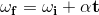
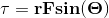
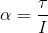

Rotation in physics is used to used to analyze systems that involve revolving objects. This can be used to predict a distacne traveled given a diameter and linear velocity or how long it will take to lift a given weight
Angular Velocity
Angular velocity is used to determine the speed of rotation of and object and is represented with omega (ω). The equation below takes into account initial angular velocity (ωi), angular acceleration (α), and time (t).
Torque
Torque or moment of force is the resistance to motion when rotaing around a central axis or fulcrum. When observing torque in a system you can use the "right hand" rule by using your right hand to rotate the object your are observing and whatever direction your thumb is pointing is the location of torque. This equation uses the dispacement from the fulcrum or radius (r), the force being applied (F), and the anglge between the lever arm and the vector (sinθ).
Angular Acceleration
Angular acceleration is the rate to which you velocity of rotaion changes of a given amount of time. Through an adaptaion of Newton's Second Law the equation for angual acceleration can be derived.
